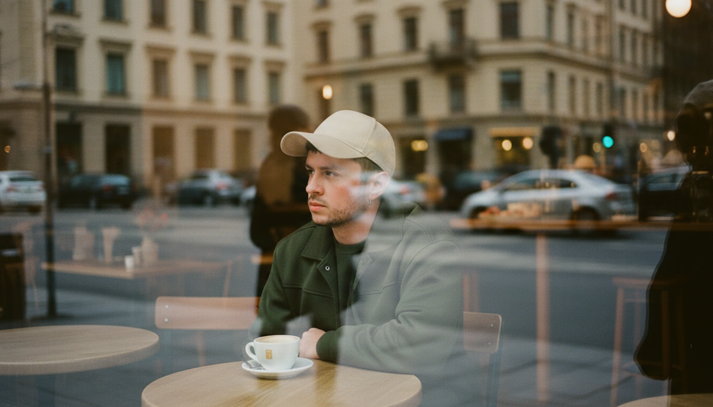

Eu quem?
> Rodrigo Matos. Aquele cara chato que reclama de processos lentos, sistemas burocráticos e pergunta: "por que não estão usando inteligência artificial?".
> Eu crio sites funcionais, ferramentas que te ajudam no trabalho ou melhoram a interação com seu cliente.
> Quer um exemplo? Você já está em um.